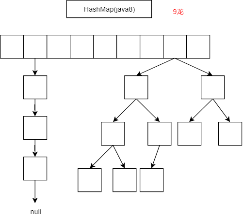
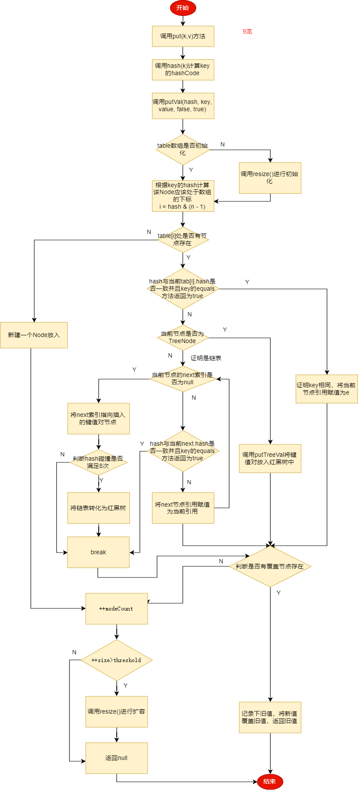
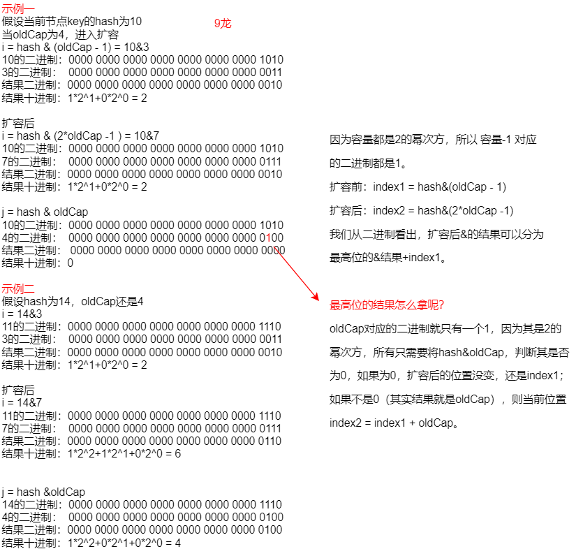

作为java开发人员，HashMap可谓是业务中的一把利器，9龙再次捡起这老生常谈的知识点，深入源码，细细品味。
首先，我们抛出几个关于HashMap的问题，带着问题去学习，就像捉迷藏一样有意思。
1、为什么要使用HashMap？HashMap有什么特性？
2、HashMap的主要参数有哪些？都有什么作用？
3、HashMap是基于什么数据结构实现的？
4、构造HashMap时传入的初始容量是如何处理的？为什么要这样做？
5、HashMap在什么时候扩容？扩容的时候都做了什么事？hash碰撞8次一定会转换为红黑树吗？
6、在foreach时对hashMap进行增删操作会发生什么？
我们在使用一种工具的时候，肯定是因为其的某种特性很符合我们的需求，能够快速准确的解决我们的问题。那我们为什么要使用HashMap呢？
This implementation provides constant-time performance for the basic operations (get and put), assuming the hash function disperses the elements properly among the buckets.
源码注释里有这样一句话，这就是我们使用HashMap的原因。
意为：HashMap为基本操作(get和put)提供了常数时间性能（即O(1)），假设散列函数将元素适当地分散到各个bucket中。
我们可以这样理解，如果当你需要快速存储并查询值，可以使用HashMap，它可以保证在O(1)的时间复杂度完成。前提是你键的hashCode要足够不同。
Map还有一个特性就是key不允许重复。下面我们就来看看HashMap如何保证O(1)进行get和put。
//默认的初始化桶容量，必须是2的幂次方（后面会说为什么）
static final int DEFAULT_INITIAL_CAPACITY = 1 << 4;
//最大桶容量
static final int MAXIMUM_CAPACITY = 1 << 30;
//默认的负载因子
static final float DEFAULT_LOAD_FACTOR = 0.75f;
//判断是否将链表转化为树的阈值
static final int TREEIFY_THRESHOLD = 8;
//判断是否将树转化为链表的阈值
static final int UNTREEIFY_THRESHOLD = 6;
//判断是否可以执行将链表转化为树，如果当前桶的容量小于此值，则进行resize()。避免表容量过小，较容易产生hash碰撞。
static final int MIN_TREEIFY_CAPACITY = 64; //hash表
transient Node<K,V>[] table;
//缓存的EntrySet，便与迭代使用
transient Set<Map.Entry<K,V>> entrySet;
//记录HashMap中键值对的数量
transient int size;
//当对hashMap进行一次结构上的变更，会进行加1。结构变更指的是对Hash表的增删操作。
transient int modCount;
//判断是否扩容的阈值。threshold = capacity * load factor
int threshold;
//负载因子，用于计算threshold，可以在构造函数时指定。
final float loadFactor;上面我们看到一个Node<K,V>[] table的Node数组。
为什么要使用数组呢？
答：为了能快速访问元素。哦，说的什么鬼，那我得追问，为什么数组能快速访问元素了？
让我们看看Node的结构。
static class Node<K,V> implements Map.Entry<K,V> {
final int hash; //key 的hash
final K key; //key对象
V value; //value对象
Node<K,V> next; //链接的下一个节点
Node(int hash, K key, V value, Node<K,V> next) {
this.hash = hash;
this.key = key;
this.value = value;
this.next = next;
}
}我们看到，Node节点内部保留了一个next节点的引用，太熟悉了，这不就是链表嘛。
到这，我们知道了HashMap的底层数据结构是基于数组+链表。但是，这就完了吗？在jdk1.7确实只是这样，jdk1.8为了提高hash碰撞时链表查询效率低的问题，在hash碰撞达到8次之后会将链表转化为红黑树，以至于将链表查询的时间复杂度从O(N)提高到O(logN)。

到这我们就可以明白，HashMap如果能够均匀的将Node节点放置到table数组中，我们只要能够通过某种方式知道指定key的Node所在数组中的索引，基于数组，我们就可以很快查找到所需的值。
接着我们就要看看如何定位到table数组中。
有了上面的基础知识，知道字段含义及数据结构，我们就有一点信心可以正式进入源码阅读。我觉得了解一个类，得从构造函数入手，知道构造对象的时候做了哪些初始化工作，其次再深入常用的方法，抽丝剥茧。
public HashMap(int initialCapacity) {
//如果只传入初始值，则负载因子使用默认的0.75
this(initialCapacity, DEFAULT_LOAD_FACTOR);
}
public HashMap(int initialCapacity, float loadFactor) {
if (initialCapacity < 0)
throw new IllegalArgumentException("Illegal initial capacity: " +
initialCapacity);
//保证初始容量最大为2^30
if (initialCapacity > MAXIMUM_CAPACITY)
initialCapacity = MAXIMUM_CAPACITY;
if (loadFactor <= 0 || Float.isNaN(loadFactor))
throw new IllegalArgumentException("Illegal load factor: " +
loadFactor);
//使用指定的值初始化负载因子及判断是否扩容的阈值。
this.loadFactor = loadFactor;
this.threshold = tableSizeFor(initialCapacity);
}我们可以看到，构造函数主要是为了初始化负载因子及hash表的容量。可能大家会疑问，这不是初始化的是threshold吗？不要被表面所欺骗，这只是临时将hash表的容量存储在threshold上，我想是因为HashMap不想增加多余的字段来保存hash表的容量，因为数组的length就可以表示，只是暂时数组还未初始化，所以容量暂先保存在threshold。
我们看到将用户指定的initialCapacity传入tableSizeFor方法返回了一个值，返回的值才是真正初始化的容量。？？？搞毛子这是？然我们揭开它神秘的面纱。
/**
* Returns a power of two size for the given target capacity.
*/
static final int tableSizeFor(int cap) {
int n = cap - 1;
n |= n >>> 1;
n |= n >>> 2;
n |= n >>> 4;
n |= n >>> 8;
n |= n >>> 16;
return (n < 0) ? 1 : (n >= MAXIMUM_CAPACITY) ? MAXIMUM_CAPACITY : n + 1;
}好吧， 我们还是把它盖上吧，9龙也没去推算过。我们从jdk给的方法注释看出，该方法返回一个目标值的2的幂次方，进一步9龙翻译为：返回大于或等于目标值的第一个数，该数必须是2的幂次方。
举例说一下：
如果输入10，大于等于10的第一个数，又是2的幂次方的数是16；
如果输入7，大于等于7的第一个数，又是2的幂次方的数是8；
如果输入20；大于等于20的第一个数，又是2的幂次方的是32；
到这我们又得问自己，为什么hash表的容量必须是2的幂次方呢？
当我们new出HashMa的对象，都会调用put方法进行添加键值对。我跟那些直接贴代码的能一样吗？有啥不一样，哈哈哈。9龙会先读源码，再贴流程图，这样大家会更理解一点。
public V put(K key, V value) {
return putVal(hash(key), key, value, false, true);
}
static final int hash(Object key) {
int h;
//将key的高16位与低16位异或，减小hash碰撞的机率
return (key == null) ? 0 : (h = key.hashCode()) ^ (h >>> 16);
}让我们看看putVal干了什么。
/**
* 此方法用于将(k,v)键值对存储到HashMap中
*
* @param hash key的hash
* @param key key对象
* @param value key对应的value对象
* @param onlyIfAbsent 如果是true,则不覆盖原值。
* @param evict if false, the table is in creation mode.
* @return 返回旧值，如果没有，则返回null。
*/
final V putVal(int hash, K key, V value, boolean onlyIfAbsent,
boolean evict) {
Node<K,V>[] tab; Node<K,V> p; int n, i;
//在第一次put的时候，此时Node表还未初始化，上面我们已经知道，构造HashMap对象时只是初始化了负载因子及初始容量，但并没有初始化hash表。在这里会进行第一次的初始化操作。
if ((tab = table) == null || (n = tab.length) == 0)
n = (tab = resize()).length;
//如果得到了一个hash值，并且hash值在很少相同的情况下，如何均匀的分布到table数组里呢？最容易想到的就是用hash%n，n为table数组的长度。但是%运算是很慢的，我们知道位运算才是最快的，计算机识别的都是二进制。所以如果保证n为2的幂次方，hash%n 与 hash&(n-1)的结果就是相同的。这就是为什么初始容量要是2的幂次方的原因。
//当找到的hash桶位没有值时，直接构建一个Node进行插入
if ((p = tab[i = (n - 1) & hash]) == null)
tab[i] = newNode(hash, key, value, null);
else {
//否则，表明hash碰撞产生。
Node<K,V> e; K k;
//判断hash是否与桶槽的节点hash是否相同并且key的equals方法也为true,表明是重复的key，则记录下当前节点
if (p.hash == hash &&
((k = p.key) == key || (key != null && key.equals(k))))
e = p;
//如果桶槽节点是树节点，则放置到树中，并返回旧值
else if (p instanceof TreeNode)
e = ((TreeNode<K,V>)p).putTreeVal(this, tab, hash, key, value);
else {
//表明是链表，还未转换为红黑树。
for (int binCount = 0; ; ++binCount) {
//如果节点的next索引是null，表明后面没有节点，则使用尾插法进行插入
if ((e = p.next) == null) {
p.next = newNode(hash, key, value, null);
//此时链表长度为9，即hash碰撞8次，会将链表转化为红黑树
if (binCount >= TREEIFY_THRESHOLD - 1) // -1 for 1st
treeifyBin(tab, hash);
break;
}
//如果key是同一个key,则跳出循环链表
if (e.hash == hash &&
((k = e.key) == key || (key != null && key.equals(k))))
break;
p = e;
}
}
//判断是否是重复的key
if (e != null) { // existing mapping for key
//拿到旧值
V oldValue = e.value;
//因为put操作默认的onlyIfAbsent为false，所以，默认都是使用新值覆盖旧值
if (!onlyIfAbsent || oldValue == null)
e.value = value;
afterNodeAccess(e);
//返回旧值
return oldValue;
}
}
//到这里，表明有新数据插入到Hash表中，则将modCount进行自增
++modCount;
//判断当前键值对容量是否满足扩容条件，满足则进行扩容
if (++size > threshold)
resize();
afterNodeInsertion(evict);
return null;
}
总结一下：
灵魂拷问：真的hash碰撞8次一定会转换为红黑树吗？？？
其实不然，在put中，如果hash碰撞8次会调用此方法将链表转换为红黑树，但不一定调用就会真正转换。需要tab.length大于等于64才会真正的执行转换操作。因为在表容量过小的时候，hash碰撞才会比较明显，但不是说表越大越好。
final void treeifyBin(Node<K,V>[] tab, int hash) {
int n, index; Node<K,V> e;
//如果表的长度小于64，是先扩容
if (tab == null || (n = tab.length) < MIN_TREEIFY_CAPACITY)
resize();
else if ((e = tab[index = (n - 1) & hash]) != null) {
//只有大于等于64才会真正的转换
TreeNode<K,V> hd = null, tl = null;
do {
TreeNode<K,V> p = replacementTreeNode(e, null);
if (tl == null)
hd = p;
else {
p.prev = tl;
tl.next = p;
}
tl = p;
} while ((e = e.next) != null);
if ((tab[index] = hd) != null)
hd.treeify(tab);
}
}put方法中用到了两次resize()方法，现在让我们来品一品resize()的具体实现逻辑。
final Node<K,V>[] resize() {
Node<K,V>[] oldTab = table;
int oldCap = (oldTab == null) ? 0 : oldTab.length;
int oldThr = threshold;
int newCap, newThr = 0;
//如果旧table中有数据
if (oldCap > 0) {
//当表的长度达到定义的最大值时，不再进行扩容，只是将判断扩容的阈值改为Integer.MAX_VALUE。
if (oldCap >= MAXIMUM_CAPACITY) {
threshold = Integer.MAX_VALUE;
return oldTab;
}
//先将新容量为原来的2倍，如果结果小于MAXIMUM_CAPACITY并且旧的容量大于等于默认值16，则也将新的阈值为原来的2倍
else if ((newCap = oldCap << 1) < MAXIMUM_CAPACITY &&
oldCap >= DEFAULT_INITIAL_CAPACITY)
newThr = oldThr << 1; // double threshold
}
//oldCap等于0 如果旧阈值大于0,则将旧阈值赋值给新容量。这一步对应于指定的容量构造器，指定容量时，赋值给了阈值
else if (oldThr > 0) // initial capacity was placed in threshold
newCap = oldThr;
//这一步对应于无参构造器，这时使用默认值
else { // zero initial threshold signifies using defaults
newCap = DEFAULT_INITIAL_CAPACITY;
newThr = (int)(DEFAULT_LOAD_FACTOR * DEFAULT_INITIAL_CAPACITY);
}
//这里是因为在oldCap大于0但没有大于默认的16，不会更改newThr的值，还是0。这时候需要根据newCap的值计算newThr。
if (newThr == 0) {
float ft = (float)newCap * loadFactor;
newThr = (newCap < MAXIMUM_CAPACITY && ft < (float)MAXIMUM_CAPACITY ?
(int)ft : Integer.MAX_VALUE);
}
//将新阈值覆盖threshold
threshold = newThr;
@SuppressWarnings({"rawtypes","unchecked"})
//使用newCap初始化新表。这里的newCap是oldCap的2倍
Node<K,V>[] newTab = (Node<K,V>[])new Node[newCap];
table = newTab;
//至此，完成了新表容量的计算及新阈值的计算，并且创建了新表。下面开始将旧表数据移至新表
if (oldTab != null) {
//从表的前往后迁移
for (int j = 0; j < oldCap; ++j) {
Node<K,V> e;
//如果下标j对应的位置有值，拿到引用赋值给e
if ((e = oldTab[j]) != null) {
//因为已经有了引用e,可以将原数组的赋值为null, help gc
oldTab[j] = null;
//如果e.next没有指向，则证明当前槽位只有一个节点，直接计算在新表的位置赋值即可
if (e.next == null)
newTab[e.hash & (newCap - 1)] = e;
//证明当前槽位不止一个节点，判断e是否为TreeNode，如果是，则使用树的迁移方法
else if (e instanceof TreeNode)
((TreeNode<K,V>)e).split(this, newTab, j, oldCap);
else { // preserve order
//因为扩容后的节点不是在j处，就在j + oldCap处。
//loHead节点记录了j处的链表的头指针，loTail记录j处尾指针
//hiHead节点记录了j+oldCap处链表的头指针，hiTail记录了j+oldCap处的尾指针
Node<K,V> loHead = null, loTail = null;
Node<K,V> hiHead = null, hiTail = null;
Node<K,V> next;
do {
next = e.next;
//判断是否还处于j处（后面会详细解释）
if ((e.hash & oldCap) == 0) {
if (loTail == null)
//记录j的头指针
loHead = e;
else
//链接节点
loTail.next = e;
loTail = e;
}
//否则在[j+oldCap]处
else {
if (hiTail == null)
//记录j+oldCap的头指针
hiHead = e;
else
//链接节点
hiTail.next = e;
hiTail = e;
}
} while ((e = next) != null);
if (loTail != null) {
loTail.next = null;
//将位置没变的链表放在j处
newTab[j] = loHead;
}
if (hiTail != null) {
hiTail.next = null;
//将位置改变的链表放在[j+oldCap]处
newTab[j + oldCap] = hiHead;
}
}
}
}
}
//返回新链表
return newTab;
}现在我们仔细分析e.hash & oldCap。二话不说，直接上图。

如此详细，是不是不点赞都有点过分了。
resize()中我们看到如果是树节点，调用了((TreeNode<K,V>)e).split(this, newTab, j, oldCap)方法。有了上面的知识，其实这个方法干的事情是一样的。将红黑树拆分为两棵子树，还是分别放置于原来位置和原来位置+oldCap位置。但要注意，这个方法在树的节点小于等于6的时候会将红黑树转换回链表。
final void split(HashMap<K,V> map, Node<K,V>[] tab, int index, int bit) {
TreeNode<K,V> b = this;
// Relink into lo and hi lists, preserving order
TreeNode<K,V> loHead = null, loTail = null;
TreeNode<K,V> hiHead = null, hiTail = null;
int lc = 0, hc = 0;
for (TreeNode<K,V> e = b, next; e != null; e = next) {
next = (TreeNode<K,V>)e.next;
e.next = null;
//判断位置是否更改
if ((e.hash & bit) == 0) {
if ((e.prev = loTail) == null)
loHead = e;
else
loTail.next = e;
loTail = e;
++lc;
}
else {
if ((e.prev = hiTail) == null)
hiHead = e;
else
hiTail.next = e;
hiTail = e;
++hc;
}
}
if (loHead != null) {
//数量小于等于6，转换回链表
if (lc <= UNTREEIFY_THRESHOLD)
tab[index] = loHead.untreeify(map);
else {
tab[index] = loHead;
if (hiHead != null) // (else is already treeified)
loHead.treeify(tab);
}
}
if (hiHead != null) {
if (hc <= UNTREEIFY_THRESHOLD)
tab[index + bit] = hiHead.untreeify(map);
else {
tab[index + bit] = hiHead;
if (loHead != null)
hiHead.treeify(tab);
}
}
}到此，resize()方法9龙啃完了，牙好疼啊。
知道了HashMap的数据结构及如何以常数时间将键值对put保存管理的，那get这不是很容易吗？请大家尝尝这道小菜。我们保存的是键值对，存储的时候都是以key作为条件存储的，所以在我们取值的时候也是通过key获取值。
public V get(Object key) {
Node<K,V> e;
//计算key的hash，用于定位桶的位置
return (e = getNode(hash(key), key)) == null ? null : e.value;
}
final Node<K,V> getNode(int hash, Object key) {
Node<K,V>[] tab; Node<K,V> first, e; int n; K k;
//如果hash桶有值，并且基于hash继续的桶位置也存在值
if ((tab = table) != null && (n = tab.length) > 0 &&
(first = tab[(n - 1) & hash]) != null) {
//先检查第一个节点是否匹配，找到则返回
if (first.hash == hash && // always check first node
((k = first.key) == key || (key != null && key.equals(k))))
return first;
//如果第一个不匹配，则判断next是否存在
if ((e = first.next) != null) {
//如果存在，判断桶节点是否为树节点，如果是树节点，则从红黑树查找返回
if (first instanceof TreeNode)
return ((TreeNode<K,V>)first).getTreeNode(hash, key);
do {
//不是树节点，从链表的表头向表尾依次判断是否匹配
if (e.hash == hash &&
((k = e.key) == key || (key != null && key.equals(k))))
//找到则返回
return e;
} while ((e = e.next) != null);
}
}
//没有找到，则返回null
return null;
}总结一下get流程：
这个字段并不是map独有的，Collection集合（List、Set）也有。此字段用于迭代时的快速失败，也就是在迭代的过程中，如果调用了put、clear、remove等会对容器内部数据的数量产生增加或减少的操作时，抛出ConcurrentModificationException异常。
HashMap有三个迭代器，分别是KeyIterator、ValueIterator、EntryIterator，它们分别对应于KeySet、Values、EntrySet内部类中，当用户调用其对应的iterator()方法时都会new一个对应的迭代器。
这里我就不贴代码了，太多，有兴趣的可以去看一看。这里主要讲解为什么快速失败。
final class KeyIterator extends HashIterator
implements Iterator<K> {
public final K next() { return nextNode().key; }
}
final class ValueIterator extends HashIterator
implements Iterator<V> {
public final V next() { return nextNode().value; }
}
final class EntryIterator extends HashIterator
implements Iterator<Map.Entry<K,V>> {
public final Map.Entry<K,V> next() { return nextNode(); }
}使用者可以根据自己的需求选择使用的迭代器。每一个都继承自HashIterator，我们来看一看。
abstract class HashIterator {
Node<K,V> next; // next entry to return
Node<K,V> current; // current entry
int expectedModCount; // for fast-fail
int index; // current slot
HashIterator() {
//关键在这里，当每一次使用迭代器的时候，会将modCount赋值给内部类的expectedModCount
expectedModCount = modCount;
Node<K,V>[] t = table;
current = next = null;
index = 0;
if (t != null && size > 0) { // advance to first entry
do {} while (index < t.length && (next = t[index++]) == null);
}
}
public final boolean hasNext() {
return next != null;
}
final Node<K,V> nextNode() {
Node<K,V>[] t;
Node<K,V> e = next;
//每次取值之前会判断modCount和expectedModCount是否相等，如果不等则表明在迭代过程中有其他线程或当前线程调用了put、remove等方法。
if (modCount != expectedModCount)
throw new ConcurrentModificationException();
if (e == null)
throw new NoSuchElementException();
if ((next = (current = e).next) == null && (t = table) != null) {
do {} while (index < t.length && (next = t[index++]) == null);
}
return e;
}
//如果想删除，只能调用迭代器自己的remove方法，但是，它删除的是调用nextNode()拿到的节点
public final void remove() {
Node<K,V> p = current;
if (p == null)
throw new IllegalStateException();
//删除之前也会判断modCount是否被修改
if (modCount != expectedModCount)
throw new ConcurrentModificationException();
current = null;
K key = p.key;
removeNode(hash(key), key, null, false, false);
expectedModCount = modCount;
}
}所以，在迭代过程中对HashMap进行增删操作会抛出ConcurrentModificationException异常。还记得一开始提出的一个问题吗？对的，就是它。你可以去看看List等的源码，modCount也存在，而且实现都是一样的。
楼主花了很大的精力与时间与大家细嚼慢咽HashMap，我想现在大家都知道了最开始的问题的答案了，包括过程中楼主提出的一些问题，也都一一进行了详解。9龙没去讨论并发条件出现的问题，也不讨论1.7并发扩容时链表死循环问题，网上太多了。更重要是，HashMap本身就不支持并发操作，那你想到了什么呢？
9龙才疏学浅，文中如有错误，敬请指出，也欢迎大家有疑问可以提出，一起探讨进步。
如果觉得9龙本文对你有帮助，请帮忙点赞、分享以示支持，如果转载请注明出处。话不多说，点关注，不迷路。